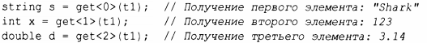

⇐13.4.2 bitset 13.5 Альтернативы⇒
Часто нам нужны некоторые данные, которые являются просто данными, т.е. набором значений, а не объектом класса с четко определенной семантикой и инвариантом для его значения (§3.5.2). В таких случаях часто бывает идеальной простая структура с соответствующим набором именованных членов. Можно также позволить стандартной библиотеке написать для нас такое определение. Например, алгоритм стандартной библиотеки equal_range возвращает пару итераторов, задающих подпоследовательность, соответствующую предикату:
Для заданной отсортированной последовательности [first;last] алгоритм equal range () возвращает значение типа pair, представляющее подпоследовательность, значения которой отвечают предикату cmp. Его можно использовать для выполнения поиска в отсортированной последовательности записей типа Record:
Первый член pair называется first, а второй - second. Это наименование не особенно креативно и поначалу может показаться немного странным, но такое последовательное именование - благо, когда мы хотим написать обобщенный код. Там, где имена first и second слишком общие, можно использовать структурное связывание (§3.6.3):
pair стандартной библиотеки (из заголовочного файла <utility>) довольно часто используется в стандартной библиотеке и в других местах. pair предоставляет такие операторы, как=,== и<, если это делают ее элементы. Вывод типа позволяет легко создать пару pair без явного упоминания ее типа. Например:
И pl, и р2 имеют тип pair<vector<string>::iterator, int>.
pl, и р2 имеют тип pair<vector<string>::iterator, int>. Если требуется больше двух элементов (или меньше), можно использовать tuple (из того же заголовочного файла <utility>). tuple представляет собой гетерогенную последовательность элементов. Например:
Более старый код тяготеет к использованию make_tuple (), так как вывод аргументов типа шаблона из аргументов конструктора появился только в C++l7.
Доступ к членам tuple выполняется с помощью шаблона функции get:
Элементы tuple нумеруются (начиная с нуля); используемые индексы должны быть константами.
Доступ к членам кортежа tuple по индексу является общим, уродливым и в определенной мере чреватым ошибками. К счастью, элемент кортежа с уникальным типом в этом кортеже может быть "именован" по его типу:
Можно использовать get<> и для записи:
Как и пары, кортежи можно присваивать и сравнивать, если их элементы могут это делать. Как и к элементам tuple, к элементам pair можно получить доступ, используя get<>().
Структурное связывание (§3.6.3) применимо к tuple так же, как и к pair. Однако, когда коду не требуется обобщенность, простая структура с именованными членами часто приводит к более понятному и легче поддерживаемому коду.